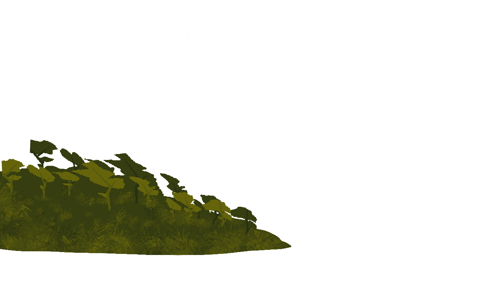
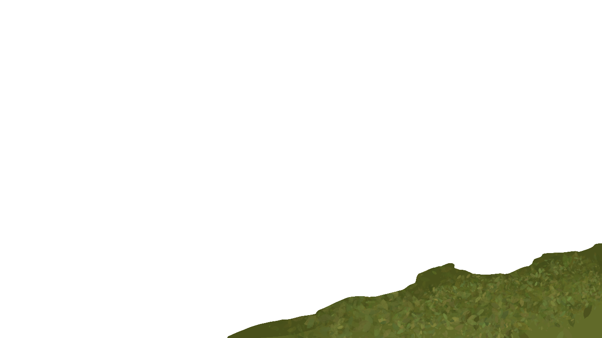
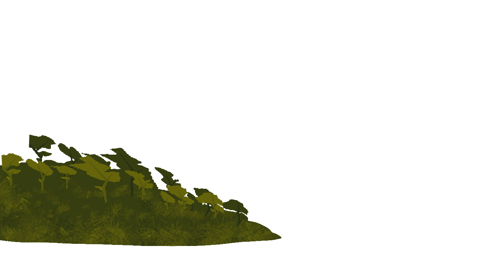
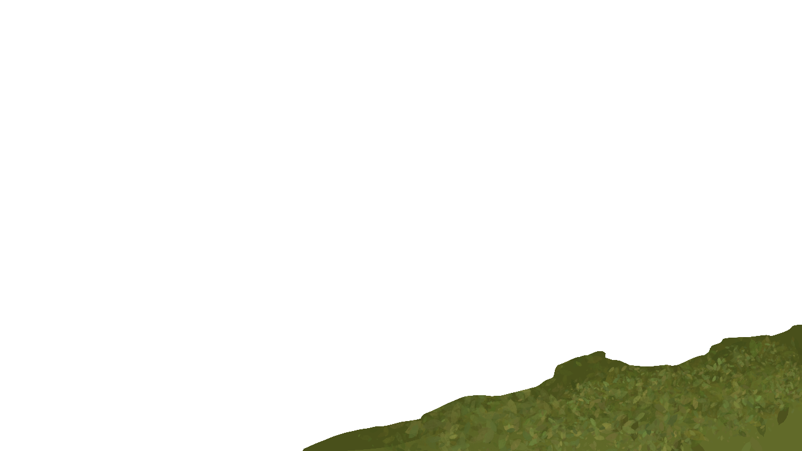
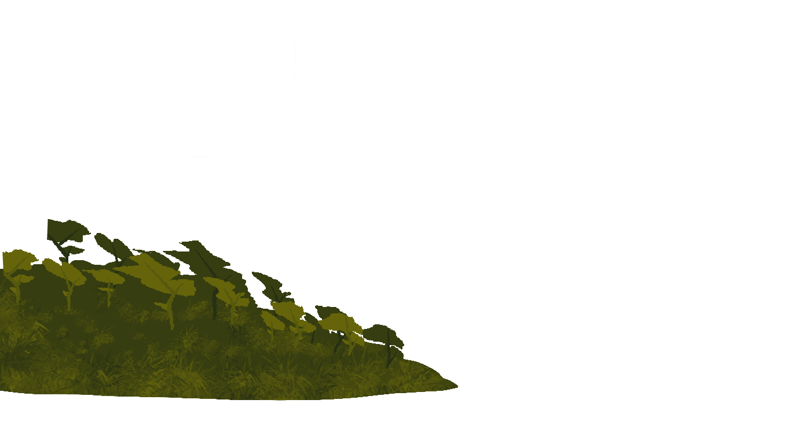
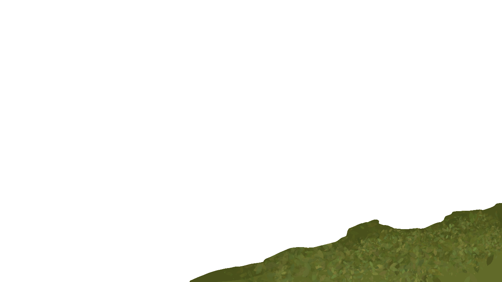
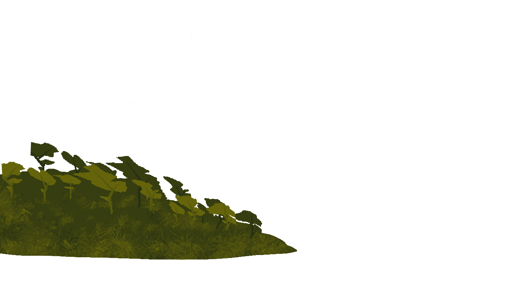
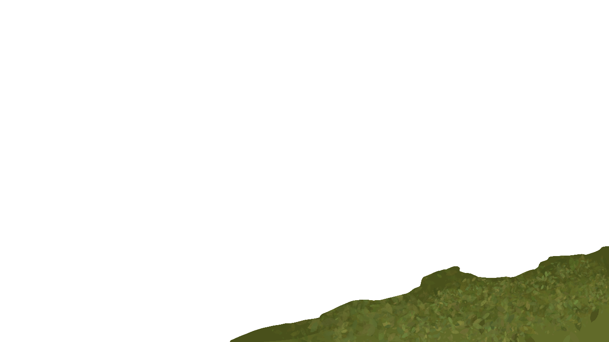

DUSK
 



I chose to use interwoven as my abstract adjective, and feedback as my interaction design principle. I aimed to create a visually intriguing digital savannah created through the layering of visual components and tied together with the use of various css and javascript components.
The idea of my site leans towards being a kind of experimental art piece, with influence from the aethetic elements of the game Firewatch. The interwoven prompt is reflected through the cohesion of the interactive elements and parallax effect, and the feedback prompt addressed through the clarity and functionality of the site's elements.
The relationship between 'interwoven' and 'feedback' are made clear through the simplicity and ease of use with this website. The clean scrolling function with direct visual and sonic feedback creates an effective cohesion between the two properties.


In terms of the aesthetic I was trying achieve, I feel that I was quite successful in achieving the minimalistic flat colour theme. I wanted the page to be fun and colourful while still looking sleek and modern. I allowed the user to be able to customise and select which backdrop they liked.
My main focus with the functionality aspect of the site is through the use of the scroll function. My aim was to make a majority of the site accessible and functional through scroll. The only exception to this is the clickable buttons that allow the user to change the visuals between day, dawn and dusk.
The primary function is the parallax scrolling effect that shifts layers of various overlapped images to create a three dimensional effect. This is acheived through java script and css. Another minor feature implemented is the fade in of text as you scroll down the page.
I also implemented 3 non-copyright soundscapes allocated to each of the differant times of day, to create better cohesiveness between the theme, environment and viewing experience. These tracks are able to be paused and muted if needed through a timeline function
some other not so noticable features I added is a subtle pulsing glow to the central title and coloured selection and hover backgrounds on the top buttons.
Regarding the users experience, the entire site follows a clean and cohesive linear format, with clearly legible bolded Arial and Poppins typefaces being used. The site also implements a variety of colour options that may better suit differant individuals likings. The site also implements high contrast images and text to allow for even better legibility.
I found that I was quite successful in meeting the interwoven prompt well with the use of the parallax effect. This created a clean and cohesive interaction. Feedback was also achieved through the direct affect that the scroll interaction with the users input. Further improvements I would have liked to incorperate are, more interactive elements and functions utilising the scroll function, as well as some sort of clickable interaction within the savanna environment.
With the help of a couple tutorials, i was able to figure out how to implement the parallax effect as well as the fade in text using basic Javascript:
https://youtu.be/Jt2yNZdOHxQ = parallax
-https://www.youtube.com/watch?v=VplDlwLTR50 = fading text
-https://www.zapsplat.com/?s=savanna&post_type=music&sound-effect-category-id= = Zapsplat.com where the sounds are from